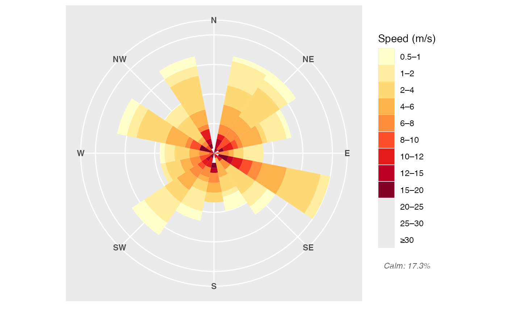
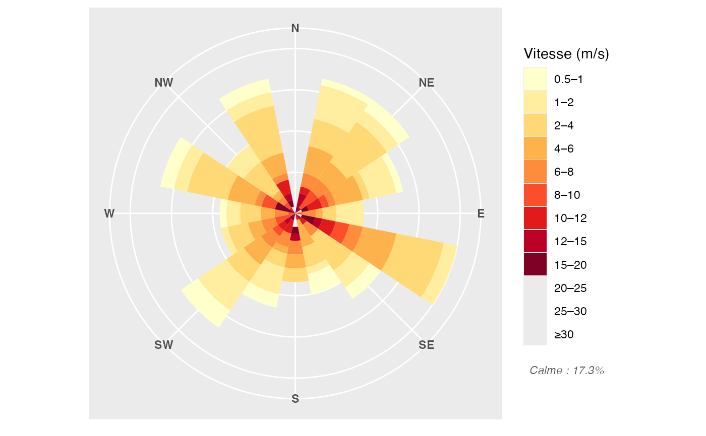

Extends ggplot2::guide_legend() to render the calm-wind percentage
below the legend colour boxes.
guide_windrose(calm_text = NULL, title = ggplot2::waiver(), ...)character(1) or NULL. Footer text. When NULL
(default), the calm percentage is extracted automatically from
the StatWindrose layer data.
character(1) or ggplot2::waiver(). Legend title.
Additional arguments forwarded to ggplot2::guide_legend().
A GuideWindrose ggproto object.
The calm percentage is extracted automatically from the
StatWindrose layer data — no need to compute or pass it manually.
Just use guide_windrose() with no arguments.
You may still override the footer text via calm_text if needed
(e.g. for a translated label or a different threshold).
Requires ggplot2 >= 3.5.0.
library(ggplot2)
set.seed(1)
df <- data.frame(wdir = sample(0:359, 300, replace = TRUE),
wspd = c(rep(0, 20), rexp(280, 0.2)))
# Calm % added automatically — no df$wspd needed
ggplot(df, aes(x = wdir, y = wspd)) +
geom_windrose() +
coord_windrose() +
scale_x_windrose() +
scale_fill_windrose(name = "Speed (m/s)") +
theme_windrose()
#> Warning: n too large, allowed maximum for palette YlOrRd is 9
#> Returning the palette you asked for with that many colors
#> Warning: Removed 5 rows containing missing values or values outside the scale range
#> (`geom_windrose()`).

# Override the footer label (e.g. French)
ggplot(df, aes(x = wdir, y = wspd)) +
geom_windrose() +
coord_windrose() +
scale_x_windrose() +
scale_fill_windrose(
name = "Vitesse (m/s)",
guide = guide_windrose(calm_text = windrose_calm_pct(df$wspd,
label = "Calme : "))
) +
theme_windrose()
#> Warning: n too large, allowed maximum for palette YlOrRd is 9
#> Returning the palette you asked for with that many colors
#> Warning: Removed 5 rows containing missing values or values outside the scale range
#> (`geom_windrose()`).
